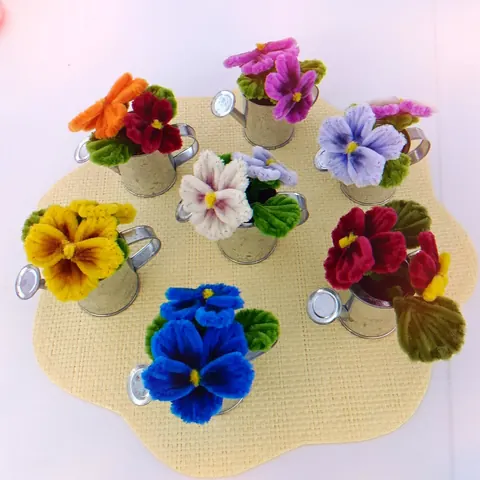

Une idée pour chaque occasion
Fête des grands-mères
Pour mamie, une petite déco fleurie qui ne fane pas : de la lavande dans un arrosoir, des pensées, une théière chinée et fleurie… avec un mot tendre sur la carte offerte.
En images


Des créations qui ont du charme
Les pensées en mini arrosoir, la lavande dans son arrosoir en métal ou la théière fleurie, pièce unique chinée en brocante, ont un petit air d’autrefois qui plaît beaucoup aux grands-mères.
Elles se posent sur un buffet, une table de cuisine ou une fenêtre, et restent jolies sans aucun entretien.
Un message pour mamie
- Bonne fête, mamie chérie !
- À la plus douce des grands-mères.
- Pour toi qui penses toujours à nous.
Mes idées de créations
Les autres occasions
Les fleurs de l’atelier
- Rose en fil chenille
- Tulipe en fil chenille
- Lys en fil chenille
- Gerbera en fil chenille
- Pavot et coquelicot en fil chenille
- Arum en fil chenille
- Hortensia en fil chenille
- Tournesol en fil chenille
- Muguet en fil chenille
- Lavande en fil chenille
- Jonquille en fil chenille
- Marguerite en fil chenille
- Pensée en fil chenille